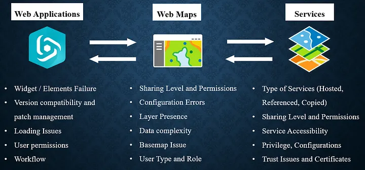

ArcGIS Web Applications: Overview, Common Issues, Solutions & Best Practices
Notice: This is another piece of work part of the GeoTech Logbook Series. If you are dealing with GIS based systems, I hope you find some useful insights regardless of your background.
Table of Contents
Introduction
ArcGIS web applications are essential tools for organizations seeking to visualize, analyze, and share spatial data interactively. Two primary platforms, ArcGIS Experience Builder and Web AppBuilder offer powerful, flexible solutions for building these web apps. However, users frequently encounter challenges during configuration and deployment. In this guide, we will try to summarize key troubleshooting workflows, common errors, and best practices, drawing from documentation and real-world cases.
📝 Side note: We won’t cover ArcGIS Web App in depth here, this is just a glimpse of something much bigger. Thus, this aims to give us an overview of how web app are handled in ArcGIS Enterprise Environments. With that out of the way, let’s get to it.
Understanding ArcGIS Web Applications: Experience Builder and Web AppBuilder
ArcGIS Experience Builder enables users to create unique web experiences with flexible layouts, interactive widgets, and support for both 2D and 3D data. It offers drag-and-drop tools, responsive design, and the ability to build multi-page apps, making it ideal for modern, mobile-friendly web applications. Additionally, express mode allows for quick setup focused on essential features, while advanced options support custom widgets and templates.
ArcGIS Web AppBuilder, on the other hand, is a WYSIWYG (What-You-See-Is-What-You-Get) platform for building HTML and JavaScript apps without coding. It provides ready-to-use widgets, configurable themes, and supports both 2D and 3D maps.
The key differences between both tools is summarized into the below table. There are more features I could have covered but as previously stated THIS IS JUST A GLIMPSE of something greater.
| Features | ArcGIS Experience Builder | ArcGIS Web AppBuilder |
|---|---|---|
| Layout Flexibility and design | Highly flexible, responsive, drag-and-drop positioning, full control over placement, size, and spacing. | Theme-based, less flexible, fixed with limited customization, WYSIWYG interface. |
| Widget Customization | Advanced, supports custom widgets. | Ready-to-use, limited customization. |
| Custom widget and themes | Developer edition supports building custom widgets and themes with low-code development. | Developer edition supports custom widgets and themes. |
| 2D/3D Support | Both in one app. | 2D or 3D apps separately. |
| App Structure | Multi-page, dynamic. | Single or multi-page. |
| Migration Path | Recommended for all new apps. | Legacy, but still supported. |
| Modern capabilities | Built on the latest web technologies. | Built on older technology. |
| Underlying Technology | Built on ArcGIS Maps SDK for JavaScript 4.x (modern API). | Based on ArcGIS API for JavaScript 3.x. |
| Use Case Suitability | Best for new apps requiring advanced customization, responsive design, 2D/3D integration, and multi-page layouts. | Suitable for apps needing many existing widgets or specific legacy widgets like Parcel Drafter. |
| Release Cycle | Three releases per year in Online and Developer editions; two releases per year in Enterprise. | Mature product with steady updates. |
Bear in mind that, there are developer editions for both Experience Builder as well as Web AppBuilder which give additional functionalities to the default ones mentioned above.
Building and Troubleshooting Workflows
Understanding how Web Applications are constructed from the ground up is essential when troubleshooting ArcGIS-based environments. This foundational knowledge enables a more effective approach and optimal use of available resources. Consequently, the figure below highlights what I refer to as key checkpoints at each stage from services, through web maps, to web applications.
From left to right, the diagram illustrates the troubleshooting workflow: starting with the web application, then moving to the associated web map(s), and finally examining the layers or services that compose those web maps.
Conversely, from right to left, it illustrates the building workflow, showing how Web Applications are developed beginning at the services level, progressing to the web map, and culminating in the final application.
Remember that certain factors such as permissions, sharing settings, user types, and roles apply across all levels. Therefore, it is important to consider these elements throughout your troubleshooting process.

Guide to Common Errors: Causes, Workarounds, and Relevant Knowledge Articles
Below is a list of frequent errors encountered when working with ArcGIS Experience Builder, along with Knowledge Base articles highlighting likely causes, and recommended solutions. This will be slightly different compared to the other guides as we will highlight main causes and plausible solutions for each error. However, it’s crucial to mention the need of exploring the knowledge article to get a clear understanding of the workflow.
As side note, WebApp Builder is soon to be deprecated reason why I did not cover it in this guide . Read more here.
Error 1: Creating Map Failed
Possible Causes
- Inappropriate sharing level of the map from Portal for ArcGIS
- Broken or corrupted ArcGIS Experience Builder
- Web map is corrupted, broken, or deleted and no longer exists from the source.
Possible Solutions
- Change the sharing level of the web map (Organization/Public)
- STEPS: ArcGIS Portal → Content → Select Web Map → Edit Sharing → Set to Organization or Public
- Replace the Web map in ArcGIS Experience Builder
- STEPS: Experience Builder → Open App → Select Map widget → Content → Replace Web Map → Save → Preview / Publish
- Replace the Map widget in ArcGIS Experience Builder
- STEPS: Experience Builder → Delete existing Map widget → Insert new Map widget → Configure with desired Web Map → Save → Preview / Publish
- Replace the Map widget in ArcGIS Experience Builder
- STEPS: Experience Builder → Delete existing Map widget → Insert new Map widget → Configure with desired Web Map → Save → Preview / Publish
- Ensure all data sources are properly bound and loaded for custom widget
- STEPS: ArcGIS Portal → Content→ Item details page →Settings Feature layer (hosted) or Feature layer (hosted, view) →Enable editing → Check keep track of changes to the data (add, update, delete features) → Select the desired editing capabilities → Save
- Verify data source connections in widget settings
- STEPS: Confirm all layers load correctly → Test in Preview mode
Relevant Knowledge Article → Creating Map Failed
Error 2: Unable to toggle the visibility of the map layers in the Map Layers widget
Possible Causes
- The “Interact with a Map widget” option is not selected
- The “Toggle layer visibility” options is not enabled
Effective Solutions
- Select and enable the necessary options in the Map Layers Widgets (Interact with a Map widget, toggle layer visibility)
- STEPS: Insert widget → Map Layers → Content → Select Interact with a Map widget (source) → Options, Toggle layer visibility → Save / Preview / Publish
- User the Map Widget as the source of the Map layers widget
- STEPS: Insert widget → Map → Select or configure your map (Source) then Insert widget → Map Layers → Open Map Layers widget settings → Set Source to Interact with a Map widget → Choose the Map widget you added → Customize layers and enable desired options (optional) → Save → Preview / Publish
- Save and publish changes after enabling options.
Relevant Knowledge Article → Toggle the visibility of the map layers
Error 3: No editable layers found
Possible Root Causes
- The layers specified in the widget are not editable
- The user does not have the appropriate role for editing a layer (viewer role)
Recommended Fixes
- Allow edits on all the feature layers.
- STEPS: ArcGIS Portal → Content→ Item details page →Settings Feature layer (hosted) or Feature layer (hosted, view) →Enable editing → Check keep track of changes to the data (add, update, delete features) → Select the desired editing capabilities → Save
- With an admin account, change the user’s role to one with editing privileges (e.g., Viewer to Editor)
- STEPS: ArcGIS Portal → Organization → Members tab →Search for Member → Click Role and select appropriate role.
- Test the Editor widget after making changes.
Relevant Knowledge Article → No editable layers found
Other Relevant Causes & Tips for Troubleshooting
- Widget-specific challenges can be tough as they call for a range of techniques and persistence.
- Ensure all web maps and feature services are shared with the intended audience and not restricted by organization or group settings.
- Check for version mismatches between custom widgets and the Experience Builder framework.
- For custom widgets, verify that the manifest URL is correct and the server is listed in allowed proxy hosts.
- Update browsers and clear cache to resolve client-side issues.
Best Practices for Reliable ArcGIS WebApps
Best practices are crucial for maintaining the stability and reliability of ArcGIS web applications. These guidelines help to prevent common issues, enhance performance, and ensure a seamless user experience. Below are some key best practices to consider when working with ArcGIS web applications:
- Regularly review sharing settings for all data sources and apps.
- Test apps in multiple browsers and devices to ensure compatibility. Incognito mode is also something worth checking as we there are browser specific issues out there.
- Document configuration changes and maintain version control.
- Monitor Esri’s release notes for updates, bug fixes, and breaking changes.
- Use roles and privileges appropriately to control editing and data access.
- Leverage Esri’s Knowledge Base and community forums for troubleshooting and peer support.
- Always save snapshot and back up configurations before major updates or migrations.
Conclusion
ArcGIS Experience Builder and Web AppBuilder are robust platforms for building interactive and responsive web mapping applications. By following structured troubleshooting workflows, understanding common errors, and applying best practices, you can minimize downtime as well as performance issue, subsequently deliver reliable, user-friendly web apps.
References & Further Reading
- ArcGIS Experience Builder | Esri Products
- ArcGIS WebApp Builder | Esri Products
- Esri Product With Relevant LifeCycle
- Manage Members | ArcGIS Enterprise
- Manage Feature layer editing | ArcGIS Portal
- Configure Map Layers widget | ArcGIS Enterprise
- Unable to configure custom widget
"GIS enables us to analyze geographic data and make informed decisions." — Jack Dangermond